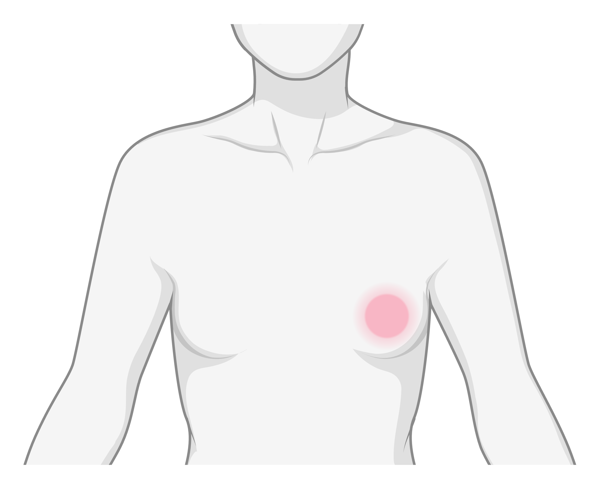
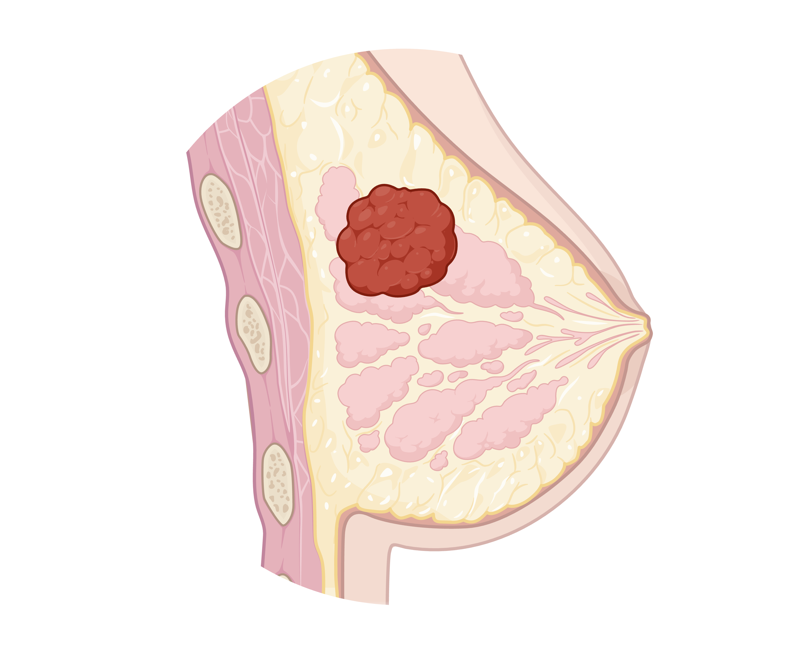

Question
Which lesions progress?
We investigate molecular, cellular, and spatial features that distinguish indolent lesions from lesions with a higher risk of recurrence or invasion.
Research track
Our breast cancer research program investigates how local cellular ecosystems influence early disease progression, recurrence risk, and response to radiotherapy.
By studying benign lesions, precursor lesions, ductal carcinoma in situ, recurrent disease, invasive breast cancer, and metastases, we aim to understand how tumor-stroma interactions and spatial tissue organization shape breast cancer development and treatment response.

Overview
Breast cancer develops through a continuum that can include atypical hyperplasia, ductal carcinoma in situ, and invasive carcinoma. However, only a subset of early lesions progress to invasive breast cancer. Because the biological mechanisms underlying this progression are still not fully understood, predicting which patients require intensive treatment remains a major clinical challenge.
This uncertainty can lead to both overtreatment and undertreatment of women with early breast cancer. Many patients with ductal carcinoma in situ currently receive adjuvant radiotherapy, although not all lesions carry the same risk of recurrence or progression.
Our research focuses on the hypothesis that early breast cancer lesions already contain localized cellular ecosystems in which tumor cells, stromal cells, immune cells, and signaling interactions cooperate to drive disease progression and influence response to radiotherapy.
Using spatial analysis of diagnostic tissue samples, we aim to reconstruct these regulatory mechanisms directly within their tissue context.
Question
We investigate molecular, cellular, and spatial features that distinguish indolent lesions from lesions with a higher risk of recurrence or invasion.
Question
We study how cancer cells interact with surrounding stromal and immune cells, and how these interactions may support progression from precursor lesions to invasive breast cancer.
Question
We aim to identify tissue-based biomarkers and signaling mechanisms associated with radiotherapy response, recurrence, and treatment resistance in early breast cancer.
Question
Our goal is to support more precise risk and treatment stratification for patients with early breast cancer, reducing unnecessary treatment while identifying patients who may benefit from intensified or alternative therapies.
Approach

We use state-of-the-art in situ technologies to study the spatial organization of breast cancer tissue. These methods allow us to connect genetic alterations, cellular phenotypes, activation states, and signaling interactions within intact diagnostic tissue samples.
To spatially link genotypic features, such as subclonal expansion, with phenotypic cellular properties, such as cell identity and activation state, we combine in situ sequencing and in situ hybridization with multiplex immunofluorescence and imaging mass cytometry.
We also develop and apply proximity ligation assays to detect targetable signaling pathway activation and immune checkpoint interactions directly in the tissue microenvironment. This enables us to study not only which cells are present, but also how they communicate and activate disease-relevant pathways.
Cohort
The foundation of our work is a comprehensive breast cancer cohort covering multiple stages of disease development and progression. This resource allows us to compare tissue ecosystems across benign conditions, precursor lesions, recurrent disease, invasive tumors, and metastatic samples.
The cohort includes:
An in-depth molecular characterization of the cohort using RNA and DNA sequencing is ongoing. These data will be integrated with spatial tissue analysis to identify mechanisms of progression, recurrence, and therapy resistance.
Impact
Our long-term goal is to improve biological and clinical prediction for patients with early breast cancer. By identifying spatial biomarkers and regulatory mechanisms linked to progression and treatment response, we hope to support more refined risk stratification and more personalized treatment decisions.
This work may help reduce overtreatment of patients with low-risk lesions while improving the identification of patients who are more likely to progress or recur.
Beyond early disease, our research also aims to identify new therapeutic targets and treatment strategies for breast cancer patients who are resistant to current treatment modalities.
Selected publications
He, Liqun; Testini, Chiara; Hekmati, Neda; Bonello, Altea; et al.
Tullberg, Axel Stenmark; Thurfjell, Viktoria; Kovacs, Aniko; Micke, Patrick; et al.
Strell, Carina; Smith, Daniel Robert; Valachis, Antonis; Woldeyesus, Hellen; et al.
Milosevic, Vladan; Edelmann, Reidunn J.; Winge, Ingeborg; Strell, Carina; et al.